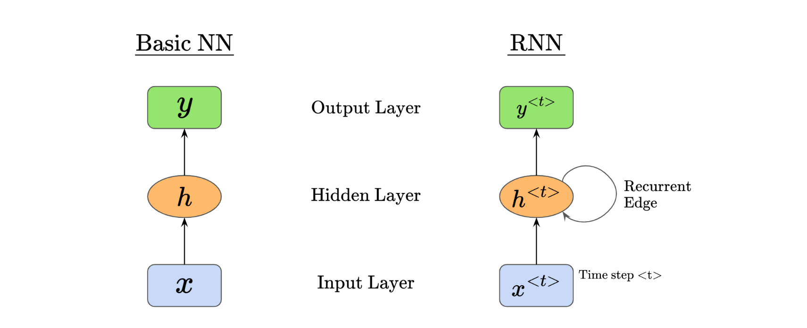
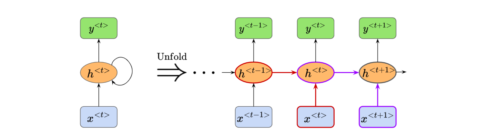
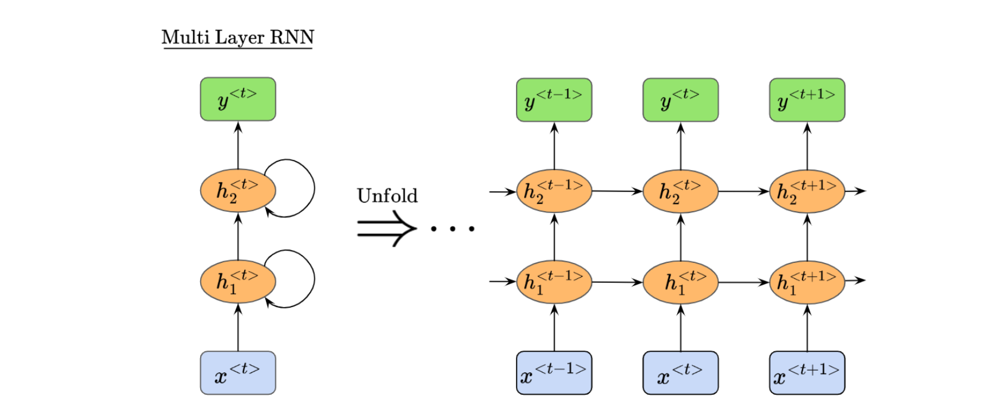
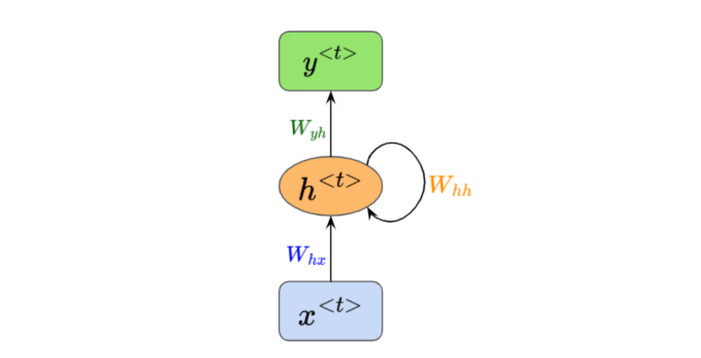
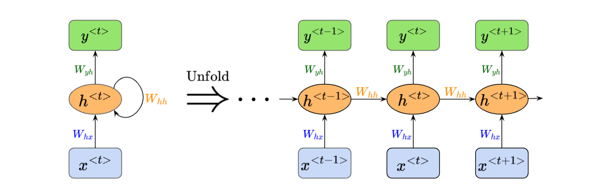
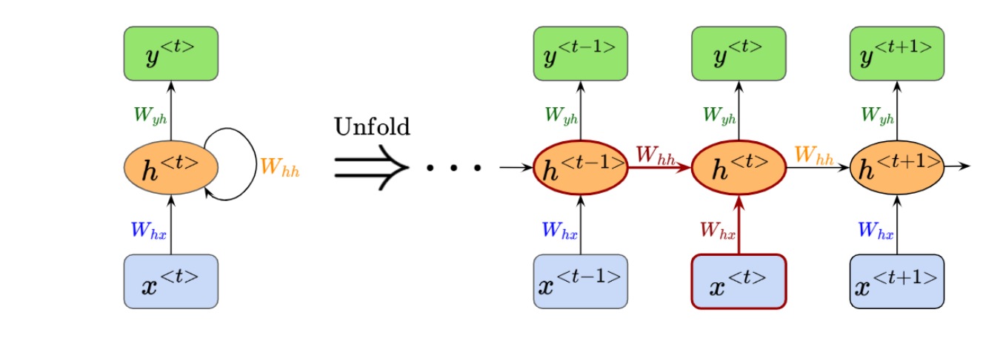
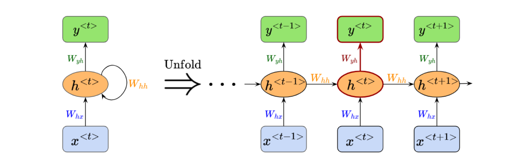
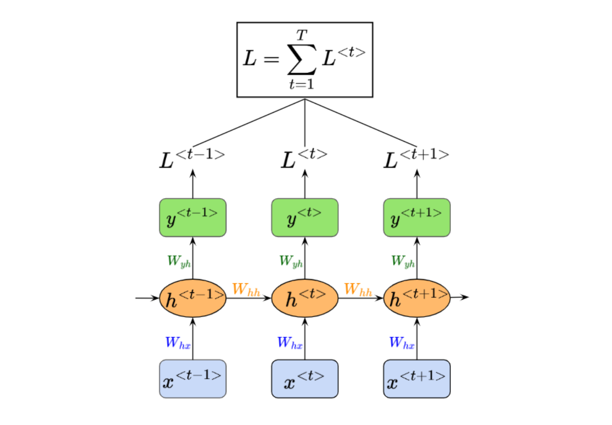

Building a Recurrent Neural Network (RNN) from Scratch
In this project, I will build an RNN using only NumPy and use the model to generate text.
16 OCTOBER 2026
In this project, we’re going to build a simple recurrent neural network from scratch, using NumPy.
We’ll add a fun twist to this project by training the RNN on a dataset containing the written works by Shakespeare, and we’ll see how well it can generate new writing based on the learned patterns!
Given the foundational knowledge on neural networks established in previous projects, we’ll move relatively quickly into the theory for RNNs.
This project is also closely linked to the next one on Long Short-Term Memory (LSTM) networks, where we will improve on the RNN architecture.
Here’s the structure for this project post:
1. Recurrent Neural Network Overview
Recurrent Neural Networks are a type of neural network designed for processing sequential data, such as text, audio, time-series data, and more. As the name suggests, the key feature that makes RNNs unique is the presence of recursive computational loops that span adjacent time steps.
This recurrence enables RNN models to effectively maintain a persistent internal state, or “memory,” of prior inputs, which can inform the processing of data points later in the sequence.
You might recall that a basic neural network usually has at least an input layer, a hidden layer, and an output layer. Here’s how the basic architecture of an RNN differs:

We can see that the RNN introduces a recursive relationship through $h^{\langle t\rangle}$ and also adds a time dimension $t$ to its layers.
In the diagram above, the RNN consists of a single computational unit with a self-connected hidden state. However, we can “unfold” this unit to see how information cycles across time steps:

As data passes through the RNN, we can see how the input sequence is processed across all time steps and how the model is influenced by information from previous time steps.

An RNN receives the input $x^{\langle t\rangle}$ and the previous hidden state $h^{\langle t-1\rangle}$, then produces a new hidden state $h^{\langle t\rangle}$.
Hopefully, it is also clear how each hidden unit $h^{\langle \cdots \rangle}$ receives two inputs. For example, $h^{\langle t\rangle}$ receives the two inputs colored in red: $h^{\langle t-1\rangle}$ and $x^{\langle t\rangle}$. Correspondingly, $h^{\langle t+1\rangle}$ receives the two inputs colored in purple: $h^{\langle t\rangle}$ and $x^{\langle t+1\rangle}$.
You may also be wondering what a multi-layer RNN looks like. It can be difficult to imagine all the inputs and outputs moving through the network, so the following diagram shows both its compact and unfolded forms:

There is also an important point to be made about parameter sharing in RNNs. Let’s say we have a classic feedforward neural network that is trained to predict the next character in English sentences, or text sequences. The feedforward network would require separate weights for each input-output mapping at every character position. Consider two similar but differently worded sentences:
- “Today, I went to the dentist”
- “I went to the dentist today”
The feedforward neural network would learn the contextual relationships independently and therefore relearn from scratch even if it had seen similar semantic patterns before. It cannot develop a unified grammar model.
On the other hand, an RNN shares weights across time steps. If it learns a pattern or rule in one part of a sentence, it can reuse that knowledge later even when the sequence order changes slightly. More technically, the RNN embeds language patterns as reusable transition functions in the shared weights, allowing those patterns to be retained and applied regardless of input sequence length or sentence order.
For sequential data, such as characters in a sentence, RNNs can therefore use fewer trainable parameters while achieving better performance than a classic feedforward neural network.
We are now ready to look under the hood and describe the RNN operations mathematically.
2. Describing the RNN Mathematically
In this section, we’ll understand the operations happening within the RNN mathematically.
Let’s begin by understanding which weight matrices are passed around in a single-hidden-layer RNN:

We can see that $h^{\langle t\rangle}$ receives two weight matrices: $W_{hx}$ from $x$, and $W_{hh}$ from its previous hidden state.
The hidden state $h^{\langle t\rangle}$ then outputs a weight matrix $W_{yh}$, which is passed into $y^{\langle t\rangle}$.
Let’s unfold this structure to see it more clearly:

We now have a bigger picture of how the weight matrices are passed around the RNN. However, neural networks usually have other components, such as bias terms and activation functions that introduce non-linearity. In the next section, we’ll look at how these components and weight matrices are combined to form the input to each node.
2.1. Forward Propagation
Let’s start by focusing on the inputs to the hidden-layer node $h^{\langle t\rangle}$, highlighted in dark red:

As mentioned, our RNN also has biases and activation functions. Here is what the net input and activation at node $h$ look like.
Net Input to Node $h$:
Activation at Node $h$:
The activation function $\sigma_h$ used here is usually the $\tanh$ function.
After passing the input $z_h^{\langle t\rangle}$ through the activation function to obtain $h^{\langle t\rangle}$, we use $h^{\langle t\rangle}$ in subsequent operations as part of the input to $y^{\langle t\rangle}$ and to the next hidden node $h^{\langle t+1\rangle}$.
Next, let’s focus on the net input and output at the output node $y^{\langle t\rangle}$, highlighted in dark red:

Net Input to Node $y$:
Output at Node $y$:
The activation function $\sigma_y$ used here is usually the Softmax function.
Surprisingly, this is pretty much it for our forward propagation!
We have covered the inputs and outputs at node $h^{\langle t\rangle}$ and the same operations at node $y^{\langle t\rangle}$.
Next, let’s learn how backpropagation is performed in RNNs.
2.2. Backpropagation Through Time
Before we go into the details of backpropagation, we must first define the loss function we’re optimizing for.
Let’s say we chose Cross-Entropy Loss as our loss function $L$.
Recall how we have an output at node $y^{\langle t\rangle}$ which changes for each time step $t$. Therefore, the overall loss $L$ can be computed as the sum over all time steps, like so:

Then, the question is, given the variable nature of our time-dependent components, how do we do backpropagation? Well, in RNNs, we do something called Backpropagation Through Time (BTT).
It’s called BTT because we calculate the gradients in the backpropagation layer by layer, but specifically from the last time step towards the original time step. In other words, we’re going backwards in time, hence the name!
Let’s dive into the derivation of our BTT process next.
2.2.1. Deriving Components in Backpropagation Through Time
Starting with the loss function, which we defined as the cross-entropy loss:
Using the derivative of natural log, the derivative of the loss function with respect to predicted value $\hat{y}^{\langle t\rangle}$ is:
Then, moving to the derivative of the loss function with respect to weighted input $z_y^{\langle t\rangle}$, using the derivative of the softmax formula (derived in my previous project post on basic neural networks):
Next, the weighted input $z_y^{\langle t\rangle}$ is comprised of two components, the weight $W_{yh}$ and bias $b_y$.
Let’s find the derivative of the loss function with respect to weight $W_{yh}$:
Also, the derivative of the loss function with respect to bias $b_y$:
The next layer down would be the activated function $h^{\langle t\rangle}=\sigma_h!\left(z_h^{\langle t\rangle}\right)$, where we want to find the derivative of the loss function with respect to $h^{\langle t\rangle}$.
However, recall that while activated function $h^{\langle t\rangle}$ directly contributes to our output $\hat{y}^{\langle t\rangle}$ at time step $t$, it is also passed into the activated function of the next time step, where $z^{\langle t+1\rangle}=W_{hx}x^{\langle t+1\rangle}+W_{hh}h^{\langle t\rangle}+b_h$, which also propagates forward to all continuing time steps.
Hence, in order to find the total derivative of the loss function with respect to $h^{\langle t\rangle}$, we need to add the derivative of $L^{\langle t\rangle}$ with respect to $h^{\langle t\rangle}$ and the derivative of $L^{\langle t+1\rangle}$ with respect to $h^{\langle t\rangle}$.
We’ll start with the derivative of $L^{\langle t\rangle}$ with respect to $h^{\langle t\rangle}$:
And also the derivative of $L^{\langle t+1\rangle}$ with respect to $h^{\langle t\rangle}$:
Adding both together, the total derivative of $L^{\langle t\rangle}$ with respect to $h^{\langle t\rangle}$ is:
Next, we’ll go deeper to find the derivative of our loss function with respect to weighted sum $z_h^{\langle t\rangle}$. To do this, we’ll use the derivative of $\tanh$:
Finally, since we know that $z_h^{\langle t\rangle}=W_{hx}x^{\langle t\rangle}+W_{hh}h^{\langle t-1\rangle}+b_h$, we can finish BTT by finding the derivative of the loss function with respect to $W_{hx}$, $W_{hh}$, and $b_h$.
Let’s start with the derivative of the loss function with respect to $W_{hx}$:
Next, to find the derivative of the loss function with respect to $W_{hh}$:
Finally, we find the derivative of the loss function with respect to $b_h$:
Nice! We’re finally done with the derivation for backpropagation through time.
Just a quick note, recall that $\frac{\partial L^{\langle t\rangle}}{\partial h^{\langle t\rangle}}$ is dependent on $\frac{\partial L^{\langle t+1\rangle}}{\partial h^{\langle t\rangle}}$, and in the same way, $\frac{\partial L^{\langle t-1\rangle}}{\partial h^{\langle t-1\rangle}}$ will be dependent on $\frac{\partial L^{\langle t\rangle}}{\partial h^{\langle t-1\rangle}}$.
The derivative of our loss function $L^{\langle t\rangle}$ with respect to $h^{\langle t-1\rangle}$ is:
We will store the value in a variable so that it can be updated every time step $t$ and used for calculation in the next time step $t-1$.
Finally, let’s summarize how we update all the parameters based on the gradients of the current time step $t$:
2.3. Vanishing and Exploding Gradients
Did you notice that for our above derivation of the loss function with respect to $W_{hh}$:
The result involves $h^{\langle t-1\rangle}$?
Let’s consider the hidden state update rule:
Since $h^{\langle t\rangle}$ depends on $h^{\langle t-1\rangle}$, and $h^{\langle t-1\rangle}$ itself depends on $h^{\langle t-2\rangle}$ and so on, we get a recursive dependency.
Since each hidden state depends on the previous hidden state, if we modify $h^{\langle k\rangle}$, it will not just affect $h^{\langle k+1\rangle}$ but all future states $h^{\langle k+2\rangle}$ and so on. Thus, to compute how much $h^{\langle t\rangle}$ changes with respect to $h^{\langle k\rangle}$, we must recursively track how each hidden state depends on the previous one.
This also means that the effect of $W_{hh}$ at time step $t$ is not just through its direct contribution at time $t$, but indirectly through all previous hidden states $h^{\langle k\rangle}$ where $k<t$.
So, we could expand our current derivation to compute the derivative of the loss function with respect to $W_{hh}$ this way:
We’re essentially expanding $\frac{\partial h^{\langle t\rangle}}{\partial W_{hh}}$ to the summation term above, which accounts for the recurrence relationship in the RNN. Each term in the sum represents the effect of $W_{hh}$ on $h^{\langle t\rangle}$ through an earlier hidden state $h^{\langle k\rangle}$.
We have to compute the gradient $\frac{\partial h^{\langle t\rangle}}{\partial h^{\langle k\rangle}}$ recursively, as a multiplication of adjacent time steps:
And this recursive multiplication is very problematic, because it can cause our derivative/gradient $\frac{\partial h^{\langle t\rangle}}{\partial h^{\langle k\rangle}}$ to vanish, or explode very easily.
This is what’s called the Vanishing, or Exploding Gradient Problem, and it is inherent in the RNN architecture.
As a result, RNNs struggle to learn long term dependencies, for example. This is because when gradients vanish, earlier time steps stop influencing later predictions, and the model relies on only recent time steps.
When gradients explode, the model might oscillate in loss value due to massive weight updates, preventing proper learning. It might even have a memorization problem, where if early time steps get huge gradients, the model overfits to the first few time steps and prioritizes memorizing them over generalizing across all time steps.
3. NumPy Implementation and Results
Describe the dataset, hyperparameters, and how you validate the model before adding your implementation.
import numpy as np
# Example structure for one forward step
def rnn_step(x_t, h_prev, W_hx, W_hh, b_h):
z_h = W_hx @ x_t + W_hh @ h_prev + b_h
h_t = np.tanh(z_h)
return h_t
3.1. Training Results
Add the loss curve, generated text, and your own observations here.
References
- Coding Owen's RNN project article
- Add the books, lectures, repositories, or documentation you actually used.